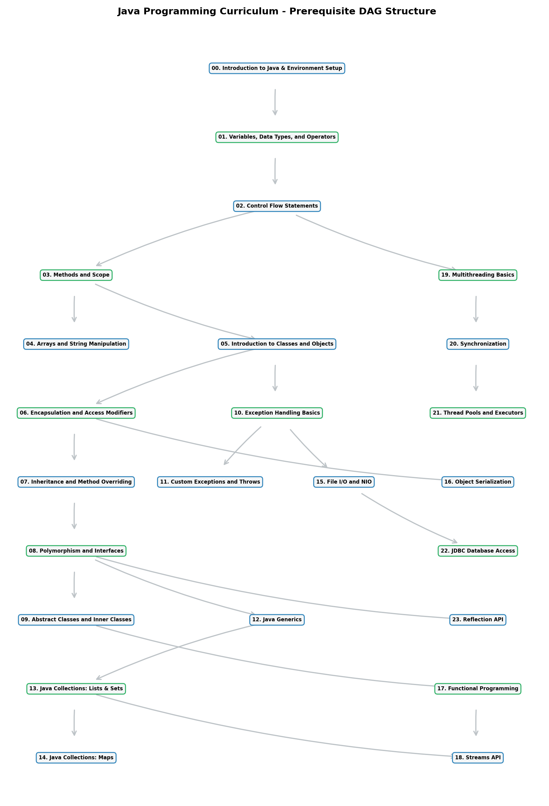
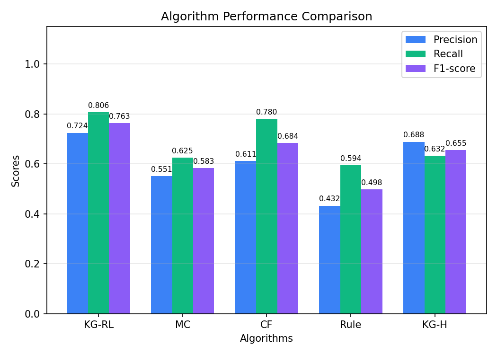
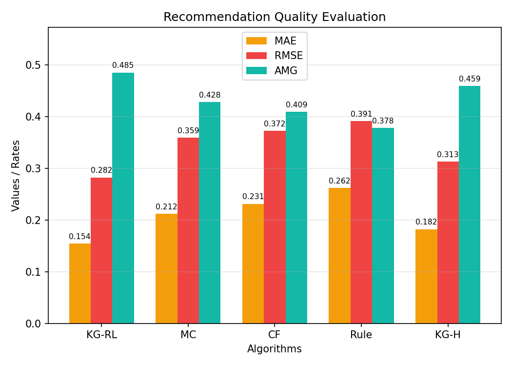
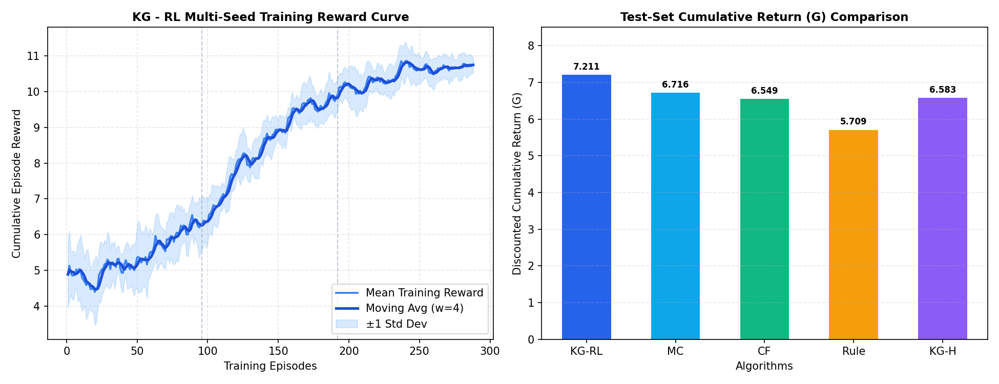

Personalized Curriculum Optimization using Deep Reinforcement Learning
An analysis of the complete synthetic learner population (N = 120 learners) reveals an average initial mastery of 2.6%. The population is primarily composed of Beginner learners, with 99.2% classified as Beginner, 0.8% as Intermediate, and 0.0% as Advanced. The most commonly mastered topic in the cohort is Introduction to Java & Environment Setup (mastered by 11 learners), while Arrays and String Manipulation remains the most difficult concept (unmastered by 120 learners). Under the RL recommendation engine, the top recommendation target is Functional Programming. Delivering these recommendations is projected to lift the average cohort mastery to 6.1%, representing an average expected mastery gain of 3.5% across the cohort.

The Knowledge Graph models prerequisite relationships among Java programming concepts. The reinforcement learning agent uses this prerequisite structure to recommend feasible learning paths while avoiding impossible topic sequences.



This section displays three core evaluation charts of the recommendation engine. The first chart compares Precision, Recall, and F1-score across all tested algorithms. The second chart evaluates recommendation quality using Mean Absolute Error (MAE), Root Mean Squared Error (RMSE), and Average Mastery Gain (AMG). The third chart tracks the multi-seed Reinforcement Learning training reward convergence across 10 independent random seeds (showing mean, moving average with window=4, and ±1 standard deviation band) alongside comparative discounted cumulative return (G).
| Algorithm | Precision | Recall | F1 Score | MAE | RMSE |
|---|---|---|---|---|---|
| KG-RL | 0.724 | 0.806 | 0.763 | 0.154 | 0.282 |
| CF | 0.611 | 0.780 | 0.684 | 0.231 | 0.372 |
| KG-H | 0.688 | 0.632 | 0.655 | 0.182 | 0.313 |
| MC | 0.551 | 0.625 | 0.583 | 0.212 | 0.359 |
| Rule | 0.432 | 0.594 | 0.498 | 0.262 | 0.391 |
The comparative evaluation indicates that KG-RL is the overall best-performing algorithm with a peak F1-score of 0.763. Algorithms leveraging topological prerequisite filtering (like KG-RL and KG-H) prevent logically unfeasible concepts from being recommended, leading to highly optimized path trajectories and improved knowledge gains.
The Knowledge Graph (KG) serves as the primary topological constraint model of the domain curriculum. Traditional recommendation systems (e.g., collaborative filtering) operate on unconstrained spaces, which leads to "cold start" anomalies and logical ordering errors. By casting prerequisite relationships as a Directed Acyclic Graph (DAG), the system guarantees that learning paths respect concept dependency constraints. For example, a learner is prevented from studying advanced objects or thread synchronization resources before demonstrating mastery of variables and basic classes, preventing frustration and stabilizing learning curves.
Reinforcement Learning (RL) is uniquely suited for path planning under uncertainty because it optimizes long-horizon cumulative mastery gains rather than single-step click-through predictions. However, standard RL agents suffer from high sample complexity and search space instability in large discrete environments. In this system, the Knowledge Graph acts as a topological state filter (pruning candidates). The agent only selects actions from the pruned, prerequisite-feasible candidate set. This hybrid architecture shrinks the RL action space, speeds up convergence, and ensures safety by guaranteeing that policy-generated recommendations are topologically feasible.
Evaluating multiple recommendation architectures allows the framework to validate the necessity of hybrid planning. Rule-based search provides static logical bounds, but fails to adapt to individual cognitive rates. Collaborative Filtering (CF) generalizes patterns across learners but lacks path cohesion, resulting in semantic leaps. Markov Chains capture short-range transitions but ignore long-term state decay. The evaluation metrics (Precision, Recall, F1, MAE, RMSE) quantify both path accuracy and prediction calibration. High F1-scores reflect effective topic alignment, while lower MAE/RMSE levels indicate well-calibrated expected mastery predictions. The proposed hybrid RL agent leverages both global topological constraints and dynamic cognitive state models to achieve superior average mastery gain (AMG) and long-horizon cumulative return (G).
| Rank | Topic | Estimated Reward (Q-value) | Confidence | Predicted Mastery Gain |
|---|---|---|---|---|
| #1 | 16. Object Serialization ★ Selected | 8.1589 | 22.2% | +24.3% |
| #2 | 04. Arrays and String Manipulation | 7.1089 | 20.8% | +28.9% |
| #3 | 08. Polymorphism and Interfaces | 7.5411 | 16.3% | +23.4% |
| #4 | 08. Polymorphism and Interfaces | 7.5408 | 16.3% | +22.8% |
| #5 | 16. Object Serialization | 8.1081 | 16.2% | +24.0% |
At this decision step, the RL agent observes the learner's current mastery vector s(t). This vector acts as a dynamic state descriptor representing cognitive familiarity across all Java concepts. In addition, the agent incorporates last-visit timestamps to account for memory decay and forgetting dynamics. By observing the entire state vector rather than localized errors, the policy assesses whether the learner has the cognitive capacity to study the candidate topic without cognitive overload.
Before the policy evaluates any recommendations, the Knowledge Graph (KG) restricts the candidate action set. Any resource whose primary knowledge point has prerequisites with mastery scores below the feasibility threshold (tau = 0.50) is pruned. This hard constraint restricts the action space to only prerequisite-feasible options, preventing the RL agent from taking invalid actions that would violate the topological constraints of the curriculum structure.
The selected topic achieved the highest expected reward because it maximizes the projected mastery gain across the involved concepts. The reward function (Eq. 10) rewards improvements on both the primary topic and related semantic concepts through graph propagation. The policy selects the action that balances immediate mastery improvement with long-term curriculum progression, ensuring that the student is recommended the most effective next step for their personalized learning path.
By continuously adapting to the student's evolving cognitive state, the policy shifts from static sequencing to dynamic pedagogical planning. This prevents two major failure modes in curriculum design: cognitive overload (attempting concepts without sufficient preparation) and redundant reinforcement (re-studying mastered concepts). The resulting closed-loop feedback system minimizes learning friction, reduces overall study time, and optimizes long-term retention compared to traditional non-adaptive curricula.
Personalized Java Programming Learning Path Recommendation System
To optimize personalized curriculum delivery, concept reinforcement, and learning paths for computer science learners studying Java. By modeling learner mastery states dynamically, the system recommends prerequisite-feasible topics and learning resources to maximize cumulative knowledge gain over time.
A structured curriculum DAG containing key Java programming concepts (Knowledge Points) connected by prerequisite edges and Jaccard-similarity-based semantic edges. Resources map directly onto these knowledge points via a sparse annotation matrix.
The MDP environment simulates learner population dynamics (direct feedback update, graph-based knowledge propagation, and exponential memory decay). The system trains an RL agent to deliver recommendations that maximize average mastery gain (AMG) and long-horizon cumulative rewards (G).
The recommendation engine runs rolls out in real time under constraints defined by the Knowledge Graph, evaluating against static baselines such as rule-based search, collaborative filtering, and Markov Chains.